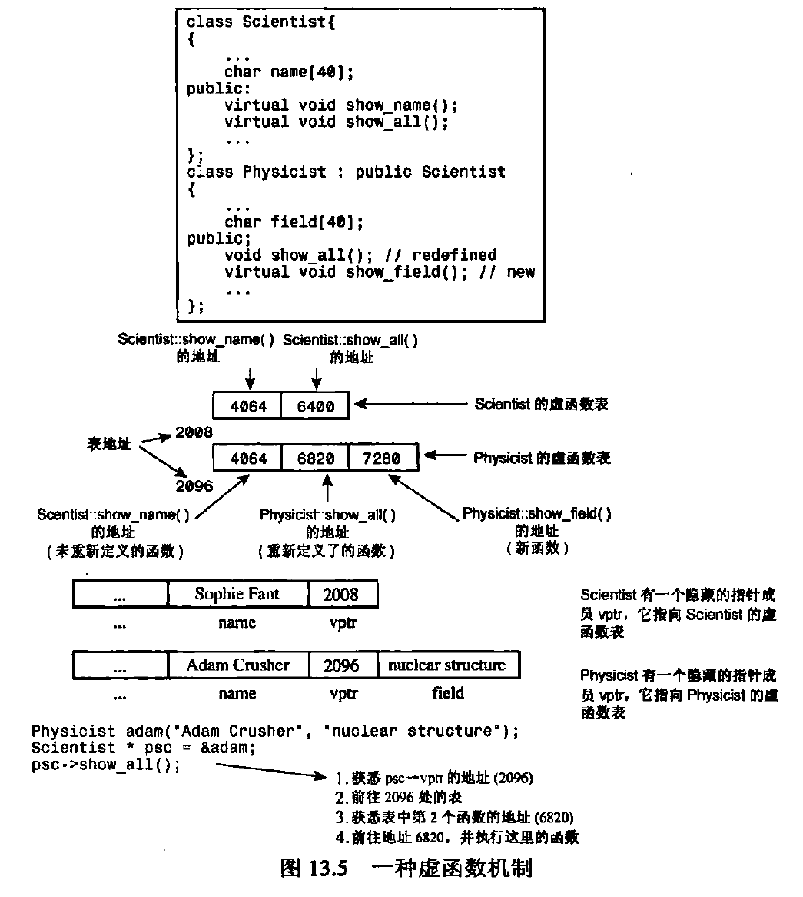

面向对象¶
约 5413 个字 477 行代码 2 张图片 预计阅读时间 24 分钟
一些规则¶
类与类之间的关系有三种: 继承(inheritance), 组合(composition), 委托(delegation).
- 永远不要把成员变量放到public
- 给成员变量加前缀或后缀下划线, 以示与全局变量的区分.
- 对对象取地址就是对象的this指针.
- 对象本身(空对象)占>=1字节的内存(绝大多数实现为==1字节), 因为即便是两个空对象也需要有不同的地址. 但有时候内存对齐(例如4字节对齐)会放大空对象的大小.
const作用于对象, 成员函数和成员变量¶
-
当const作用于一个对象 obj 的类型是 const T，意味着:
- 不能通过 obj 修改其非 mutable 的子对象（非静态数据成员等）;
- 只能调用 T 的 const 成员函数（以及 const/const volatile 更严格版本）;
- 不能把 obj 绑定到 T&（非常量左值引用），但可绑定到 const T&。
-
当const作用于成员函数声明 成员函数的 cv 限定会改变 this 的类型，从而限制函数体内对对象的修改能力，并参与重载决议. 从语义上, 一个const成员函数声明该函数不会修改调用对象本身. 对类 X 的非静态成员函数：
- void f(); 中：this 的类型是 X* const
- void f() const; 中：this 的类型是 const X* const
注意这里有两层const, 指针本身是 const（不能在成员函数里给 this 重新赋值）。const 出现在 *this 的指向类型上时，才意味着“不能修改对象状态”（除 mutable 之外）
const 成员函数内：不能修改非 mutable 的非静态数据成员。只能调用同样满足 const 约束的成员函数(即 g() const )
-
当const作用于成员变量声明 例：struct X { const int a; };
每个 X 对象里都有一个 a，其值在构造完成后不可再赋值。必须在构造函数成员初始化列表或类内初始化器中初始化。 含 const 非静态成员的类型，拷贝/移动赋值运算符往往会被隐式删除，因为无法给 const 成员再赋值。
常量const对象¶
常量对象只能调用const成员函数, 非const成员函数被视为可能修改对象状态.
class A{
private:
int val;
public:
int GetVal() {return val};
};
int main()
{
A a{1};
const A aa{2};
cout << a.GetVal() <<endl;
//cout << aa.GetVal() <<endl;
//error: passing 'const A' as 'this' argument discards qualifiers [-fpermissive]
}
在有对象的组合时, 需要注意维护const语义的传递, 即一个常量对象的内部对象, 我们也不希望其能被修改, 见后文组合
静态成员变量和静态成员函数¶
静态成员变量¶
静态成员变量与类绑定而非对象. 例如统计某个类的有多少个对象的counter, 某个类为新对象分配的自增ID, 某个类所有对象适用的常量, 某一类所有对象的共享资源(缓存, 线程池等)
-
类内仅声明, 需要在类外定义
-
非常量的static成员变量不能在类内初始化, 需要在类外初始化
///a.h
class A{
private:
static int val1;//static int 不可类内初始化
int val2 = 2;
static const int N = 3;//N是编译时常量, 可以这样写;
}
///a.cpp
int A::val1 = 1;
- 特殊:
static const可以在类内初始化;
若它只当作编译时常量表达式(定义数组大小, 用作模板非类型参数, switch-case的case), 则不用在类外另加定义; 否则仍应当在类外进行定义.
///a.j
class A{
private:
static const int N = 3;//N是编译时常量, 不必在类外定义
static const int M = 4;//M是需要内存的变量, 需要在类外定义.
}
///a.cpp
const int A::M;//不用写static了
///main.cpp
... ...
// A::N在编译时被替换成了3, 不是变量, 不需要在类外定义.
int arr[A::N];
// A::M被读值, 当作变量处理, 需要分配内存, 需要在类外定义
int x = A::M;
std::cout << A::M << std::endl;
... ...
静态成员函数¶
-
非static成员函数和普通函数的区别?
非static成员函数有隐含参数this, 而static成员函数没有. 因为从实现层面, 对非static成员函数的调用必须使用this指针.
首先成员函数的CV/引用限定符限制了改成员函数是否可以修改caller对象(
int MyClass::getValue() const;/int MyClass::setValue();), 或者区分重载函数被左值引用对象还是右值引用对象调用():这是通过在编译期修饰隐含的this指针参数类型, 产生不同的函数签名来实现的.class A { public: void text()& { cout<<"左值引用\n"; } void text()&& { cout<<"右值引用\n"; } }； int main(){ A a; a.text(); // 输出"左值引用" A().text(); // 输出"右值引用" }(注意, CV限定符会改变this指针类型, 但&&限定并不会让函数体的
*this变成真的右值.*this在函数体内一直是左值表达式.)其次在多继承/虚继承场景时, 成员函数必须取得具体唯一的子对象的地址, 对于不同的子对象才能执行不同的行为.
-
静态成员函数由于和类绑定而非对象, 因此只能访问同样和类绑定的静态成员变量, 不能访问非静态成员变量.
静态成员函数的应用¶
-
单例模式(Meyers Singleton) 对于需要确保某个类全局只有唯一实例的情况(例如日志系统), 在static成员函数内定义static对象, 可以确保不会重复实例化且线程安全(只在第一次调用时实例化).
-
包装成员函数为C语言库的回调函数指针 C语言库常需要一个普通函数指针作为回调函数, 因为C语言没有”隐含this指针”的设计, 直接传入对象的成员函数会有问题, 所以若我们希望通过C语言库回调某个对象的成员函数, 则需要通过一个static成员函数来包装.
extern "C" {
//该C语言库的功能为在发生event_i时, 调用C_Callback(event_i, user_j) 去修改指针user_j所指向的数据.
//用户自定义要传入的回调函数, 在发生指定event时对指定user进行指定操作. 对于面向对象, user即为指向某对象的指针.
typedef void (*C_Callback)(int event, void* user);
void RegisterCallback(C_Callback cb, void* user);
}
class Client {
public:
void Start() {
RegisterCallback(&Client::OnEventThunk, this);
}
private:
void OnEvent(int event) {
//真正的处理流程
}
// “桥接函数”：签名严格匹配 C_Callback
static void OnEventThunk(int event, void* user) {
auto* self = static_cast<Client*>(user);
self->OnEvent(event);
}
};
构造函数和初始化¶
类成员变量的初始化方式¶
???+ Note C++变量的初始化过程
所有**拥有静态存储期的变量**, 都会在main函数之前进行初始化. 对**这些拥有静态存储期的变量**分为静态初始化期和动态初始化期. 静态初始化一定在main()之前进行, 其先后分为**零初始化**(zero-initialization, 把所有具有静态存储期的对象都置为0), 和**常量初始化**(对于满足编译期常量的, 初始化为常量值). 而**动态初始化**需要执行构造函数等等, 根据不同变量有差异, 例如普通的全局对象也在main()之前由动态初始化进行构造, 但局部static对象在首次使用时进行构造.
-
默认成员初始化器(initializer), 从C++11 开始
初始化器会在构造函数的函数体执行之前完成
注意静态成员变量不能在类内初始化, 除了静态成员常量, 它可以在类内初始化(见上文).也可以用已初始化的成员变量去初始化别的成员变量:
默认成员初始化器也支持如下语法:
class MyClass{ int _id{_count++}; static int _count; public: MyClass(){ cout << "Create My Class" <<_id <<endl; } ~MyClass(){ cout << "Drop My Class" <<_id<<endl; } } int MyClass::_count = 0; int main(){ MyClass obj0; MyClass obj1; MyClass obj2; }-
上述代码的输出为:
Note
明明_count声明在_id之后, 为什么_id能够用_count去初始化呢? 因为_count是static, 是一个有静态存储期的变量, 在进入main函数之前以及对象被创建之前就由静态初始化被初始化为0了. 所以_count是比_id先初始化的.
-
-
成员初始化器列表(member initializer lists)
初始化器列表会在构造函数的函数体执行之前完成.
class A{ int id, val; string name; public: // 可以使用(): A(int id, int val, string name): id(id), val(val), name(name) {} // 或者使用{}: A(int id, int val, string name): id{id}, val{val}, name{name} {} // 同样,可以用已初始化的成员变量给未初始化的成员变量初始化: A{(int id): id{id}, val{this->id}, string{"defaultName"} {} };注意成员初始化器列表的顺序不影响成员被初始化的顺序,它们按照在类定义中的顺序初始化.
-
构造函数内赋值
尽量少在构造函数内赋值, 减少构造的开销. 也不应把业务代码放在构造函数内.
由于构造函数体在默认初始化器和初始化器列表之后执行, 因此若有构造函数体, 最终的结果以构造函数体为准.
()和{}去初始化对象¶
C++在定义一个对象时, 使用()是直接初始化(direct initialization), 使用{}是列表初始化(list initialization).
- 使用
{}的好处:- 禁止窄化转换(narrowing), 比如
int a(3.14)会初始化a为3(截断, 保留整数), 而int b{3.14}会error. - 优先匹配定义了初始化器列表(
std::initializer_list<T>)的构造函数. ()可能被解析成函数声明,{}不会;{}会清零内置类型,()不会.
- 禁止窄化转换(narrowing), 比如
-
使用
{}的坑:-
容器由于定义了初始化器列表为参的构造函数, 会解析为列表构造
-
auto会将{}推导为std:initializaer_list
-
转换构造函数与explict¶
构造函数默认时转换构造函数, 允许隐式转换:
- 初始化时隐式转换: - 函数调用时隐式转换禁止此类隐式转换, 需要给构造函数加上explicit关键字.
委托构造函数¶
class class_a {
public:
class_a() {}
class_a(string str) : m_string{ str } {}
class_a(string str, double dbl) : class_a(str) { m_double = dbl; }
double m_double{ 1.0 };
string m_string{ m_double < 10.0 ? "alpha" : "beta" };
};
int main() {
class_a a{ "hello", 2.0 }; //expect a.m_double == 2.0, a.m_string == "hello"
int y = 4;
}
继承 (is a)¶
-
构造先基类再派生类, 析构时先派生类再基类.
-
内存布局: 派生类对象的内存空间先是其属于基类的成员变量, 再是属于其自己的成员变量.
继承中的访问权限¶
-
访问说明符
- public 自己(基类),派生类和外部都能访问
- protected 只有自己(基类)和派生类能访问, 外部不能访问. 在没有继承时protected等同于private
- private 只有自己(基类)能访问, 派生类和外部都不能访问.
-
继承方式:
- 公有继承(public): 范围不变. 基类的private不继承; 基类的protected在派生类还是protected; 基类的public在派生类还是public.
- 保护继承(protected): 基类的public在派生类变成protected.
- 私有继承(private): 基类的public和protected在派生类变成private.
C++中, class的默认继承方式是私有继承, struct的默认继承方式是公有继承
派生类的构造¶
派生类对象构造时, 先进行重载决议来选择要调用的派生类构造函数, 再根据该构造函数的初始化列表决定调用哪个基类构造函数. 有时候需要指定派生类在不同情况下选用不同的基类构造函数, 若不写明 (采用派生类默认无参构造函数, 或派生类构造函数未写明调用哪个基类构造函数), 则默认调用无参基类构造函数Base().
#include <iostream>
using namespace std;
class Base
{
public:
Base() {cout << "Default Base Constructor" << endl;}
Base(string str) : name(str) {cout<< "Parameterized Base Constructor: " << name << endl;}
string name{"BaseName"};
void testFunc()
{
cout << "Base::testFunc()" << endl;
}
};
class Derive: public Base
{
public:
Derive() : Base() {cout<< "Default Derive Constructor" << endl;}
Derive(string str) : Base(str){cout<< "Parameterized Derive Constructor: " << name << endl;}
};
int main()
{
Base Base1;
Base Base2{"asdfad"};
Derive obj1;
Derive obj2{"123123"};
}
注意这里不是委托构造, 而是基类子对象初始化(base-class subobject initialization), 也就是在派生类构造函数的成员初始化列表里指定用哪个 Base 构造函数来构造 派生类对象内部的那一份 Base 部分。
继承中同名的成员变量和函数¶
- 同名成员变量和成员函数, 优先访问派生类的;
- 若派生类没有定义同名的成员函数, 则会直接访问到基类的成员函数.
若一定要访问基类的同名成员变量/函数, 在成员变量名前加作用域限定符(基类名::成员变量名).
class Base{
public:
string name{"BaseName"};
void testFunc(){
cout << "Base::testFunc()" <<endl;
}
}
class Derive : public Base{
public:
string name{"DeriveName"};
void testFunc(){
cout << "Derive::testFunc()" <<endl;
}
void printBase(){
cout << "Base = "<< Base::name << endl;
}
}
int main(){
Derive a;
cout << a.name << endl; // DeriveName
cout << a.Base::name << endl; // BaseName
a.printBase(); // Base = BaseName
cout << a.testFunc() << endl; // Derive::testFunc()
cout << a.Base::testFunc() << endl; // Base::testFunc()
}
多态公有继承¶
-
多态: 同一个方法的行为随上下文而异.
-
静态多态: 函数重载, 模板;
-
动态多态: 通过虚方法实现.
多态常与公有继承结合, 为不同类型的实体提供统一的接口. 多态公有继承的实现可基于两种机制: 1. 静态多态: 在派生类中重新定义基类的方法(即上文”继承中同名的成员变量和函数”); 2. 动态多态: 使用虚(virtual)方法.
虚方法¶
在基类方法的声明中使用关键字virtual, 则该方法在基类以及所有的派生类中都是虚方法.
class Base{
public:
int id0{0};
string name{"base"};
Base(string str, int id):name{str}, id0{id} {}
virtual void showName(){
cout << "Base Name " << name <<endl;
}
void showNameNonVirtual(){
cout << "Base Name " << name <<endl;
}
};
class Derive1 : public Base{
public:
int id1{1};
Derive1(string str, int id): Base(str, id) {}
virtual void showName() override {
cout << "Derive1 Name " << name <<endl;
}
void showNameNonVirtual(){
cout << "Derive1 Name " << name <<endl;
}
};
class Derive2 : public Derive1{
public:
int id2{2};
Derive2(string str, int id): Derive1(str, id) {}
void showName() override {
cout << "Derive2 Name " << name <<endl;
}
};
Base::showName(), Derive1::showName(), Derive2::showName()都是虚方法;
而Base::showNameNonVirtual(),Derive1::showNameNonVirtual()不是虚方法.
派生类的同名函数会重写(override)基类的虚函数. 重写时应在派生类的函数签名后, 函数体前加上 override关键字, 这样会检查基类是否有对应的虚函数.
静态绑定和动态绑定¶
函数作为一个片段存在于内存的代码区, 一般而言, 将函数调用解释为保存上下文并让程序计数器跳转到函数的起始地址, 这被称为绑定(binding, 或称联编). 静态绑定(static binding, 又称静态联编或early binding早期联编), 是指编译器在编译阶段就把函数调用解释为跳转到一个固定的函数起始地址. 而动态绑定(dynamci binding, 又称动态联编/晚期联编)是指, 在编译阶段不能确定函数调用使用哪个地址, 需要在运行时确定, 所以编译器生成的是”在运行时选择跳转到正确的函数的代码”.
继承类型的指针和引用类型的向上强制转换(upcasting)¶
对于一般类型, 在不使用显式类型转换时, C++并不允许将一种类型的地址赋值给另一类型的指针, 也不允许将一种类型的引用指向另一种类型.
C++允许派生类对象的地址赋值给基类指针, 也允许基类的引用类型去引用一个派生类对象, 这两种情况下是默认进行隐式类型转换. 这被称为向上强制转换(upcasting).
这意味着, 一个形参是基类引用/基类指针类型时, 可以传入派生类对象/派生类对象地址.
虚方法实现多态¶
当通过指针或引用调用对象的成员函数, 且成员函数为虚方法, 则将使用动态绑定; 除此之外的情况使用静态绑定.
具体而言, 当使用静态绑定时, 编译器通过字面的对象/指针/引用类型调用对应类的成员函数. 而使用动态绑定时, 编译器通过指针/引用所具体指向的对象类型调用成员函数.
void funcP(Base *p){
p->showName();
}
void funcR(Base &r){
r.showName();
}
void funcV(Base val){
val.showName();
if((val.name).find("Derive")!=string::npos){
//cout << "id1= "<< val.id1<<endl;//无法通过编译
//error: 'class Base' has no member named 'id1';
}
}
int main(){
Base obj0{"BaseObj", 0};
Derive1 obj1{"DeriveObj", 1};
funcP(&obj0);
funcP(&obj1);
funcR(obj0);
funcR(obj1);
funcV(obj0);
funcV(obj1);
}
Base Name BaseObj
Derive1 Name DeriveObj
Base Name BaseObj
Derive1 Name DeriveObj
Base Name BaseObj
Base Name DeriveObj
若我们将funcP, funcR, funcV的showName()都改为showNameNonVirtual(), 结果为:
Base Name BaseObj
Base Name DeriveObj
Base Name BaseObj
Base Name DeriveObj
Base Name BaseObj
Base Name DeriveObj
Note虚函数表
定义了虚方法的类都有虚函数表. 注意每个类对应一张虚函数表, 这个表不会存在对象中, 每个对象只保存一个隐藏的指针成员vptr指向其所属类的虚函数表.
所以有虚函数会使对象多一个指针的空间.

纯虚函数和抽象类¶
-
纯虚函数没有实现;
virtual func(para) = 0; -
有纯虚函数的基类或继承了纯虚函数(没有重写基类纯虚函数)的派生类被称为抽象类;
-
抽象类不能实例化, 因此可以通过此方式实现强制规范, 让使用者必须实现指定的函数接口.
纯虚函数只作为函数接口.
#include <iostream>
using namespace std;
class XThread
{
public:
virtual void Run()=0;
void Start() {
//系统线程创建
//日志
//计时
//异常处理
//...
Run();
}
};
class XTask: public XThread
{
protected:
void Run() override {
cout << "XTask Run" << endl;
}
};
int main()
{
XTask task;
task.Start();
XThread* xt = new XTask();
xt->Start();
}
vector<XThread>或者unique_ptr<XThread>等写法, 使得代码可扩展性兼容性更好.
注意这里要清楚一点, 由于我们没有重写Start()且Start不是虚函数, task.Start()和xt->Start()都是静态绑定到的XThread::Start(). 而Start()内部的Run()调用在运行阶段根据实际类型判断绑定到XTask.Run().
虽然基类不能访问派生类的private成员, 此处在访问控制时(编译期, 静态类型检查), Run()检查到的是XThread::Run(), 是基类自己的函成员函数, 所以通过了访问检查. 而运行时访问控制并不会再次启动, 所以运行时Start()内的Run()绑定到了XTask::Run()
常见坑: 析构函数在绝大部分情况应设置为虚函数¶
#include <iostream>
using namespace std;
class XThread
{
public:
virtual void Run()=0;
void Start() { Run();}
XThread()
{
cout << "ctor XThread" << endl;
}
~XThread() //此处本应写为 virtual ~XThread()
{
cout << "dtor XThread" <<endl;
}
};
class XTask: public XThread
{
public:
XTask()
{
cout << "ctor XTask" <<endl;
}
~XTask()
{
cout << "dtor XTask" <<endl;
}
private:
void Run() override {
cout << "XTask Run" << endl;
}
};
int main()
{
XThread* xt = new XTask();
delete xt;
}
当我们改成virtual ~XThread() {... ...}, 才能成功析构XTask:
设计模式: 组合 (has a)¶
一个类A包含另一个类B的对象. 在使用类A的对象时, 不应该直接访问B例如A.B.func(), B类对象的所有需要的功能都应该通过A封装一层来访问.
组合还是继承?
如果我希望一个类复用另一个类的代码并具有另一个类的某些功能, 组合和继承表面上都是可行的. 但是继承有更严格的判断标准, 当且仅当以下条件成立时才使用继承:
- is a 语义成立;
- LSP可替换性(Liskov Substitution Principle)成立, 即将基类出现的地方均替换为子类, 不影响软件功能;
- 接口扩展而非裁剪: 派生类不应限制基类的大量接口. 要求对接口做限制意味着派生类只是与基类有”相似”性质, 而不满足”派生类是基类”.
组合在逻辑上要求更宽松, 因此在以下情况下应当优先考虑组合:
- 希望复用代码实现, 但不想继承函数接口;
-
需要高度受限的接口与很好的封装: 继承会暴露不该暴露的能力, “让基类的成员函数func在派生类中禁用”是不可行的且违背继承本意的. 不论是声明private还是delete都无法阻止某个基类成员函数被访问, 这可以利用向上强制转换(upcasting)或者显式调用Base::func来做到:
#include <iostream> struct Deque { void push_front(int) { std::cout << "Deque::push_front(int)\n"; } void push_front(double) { std::cout << "Deque::push_front(double)\n"; } void push_back(int) { std::cout << "Deque::push_back(int)\n"; } }; // 方案1：在派生类里“禁用/删除”某个接口 struct Queue_Delete : public Deque { using Deque::push_front; // 把基类重载集合引入（否则会被隐藏） void push_front(int) = delete; // 试图禁用 int 版本（队列不想要） }; // 方案2：在派生类里“私有化”某个接口 struct Queue_Private : public Deque { private: using Deque::push_front; // 只是在 Queue_Private 的作用域里变成 private public: using Deque::push_back; }; int main() { std::cout << "=== delete 方案 ===\n"; Queue_Delete q1; q1.push_back(1); // q1.push_front(1); // 编译期报错：已 delete q1.push_front(3.14); // OK：double 版本仍可用 Deque& b1 = q1; // 关键：上行转换 b1.push_front(1); // OK！直接调用基类接口（队列不变量被破坏） q1.Deque::push_front(1); // OK！显式限定到基类作用域，同样绕过（不变量被破坏） std::cout << "\n=== private 方案 ===\n"; Queue_Private q2; q2.push_back(2); // q2.push_front(2); // 编译期报错：在派生类作用域里是 private Deque& b2 = q2; // 再次上行转换 b2.push_front(2); // OK！仍然能从基类视角调用 q2.Deque::push_front(2); // OK！显式限定到基类作用域也能调用 } -
希望未来保持底层的可替换性: 组合是一种接口, 当我需要换掉组合内部的类, 只需要改组合类的定义而无需改变任何业务代码, 因为我们没有直接使用组合内部的类的功能. 而若使用继承, 我们很可能在业务代码里使用了基类的功能, 换掉基类则很可能需要修改业务代码.
一个例子是标准库的queue和deque, queue不是一种deque因为不满足deque的双端性质, queue希望严格FIFO行为不希望用户调用push_front, queue在底层使用deque时需要限制接口而非扩展接口, queue希望在底层能够替换为list以适配某些场景. 所以queue和deque是组合关系.
设计模式: 工厂类¶
Logger与LogFac之间是组合关系.
class Logger
{
public:
Logger() {cout << "Create Logger\n";}
~Logger(){cout << "Drop Logger\n";}
};
class LogFac //工厂 单件模式 私有化构造函数
{
public:
static LogFac& Instance(){
static LogFac fac;
return fac;
}
Logger& GetLogger() { return logger_; }//返回Logger类的引用, 避免拷贝构造.
const Logger& GetLogger() const{ return logger_; }//为什么要有const? 因为当LogFac是const对象时, 其只能访问const函数(确保不会修改对象自身).且因为Logger作为const对象的一部分自然也必须是const.
~LogFac(){cout << "Drop LogFac\n";}
private:
LogFac() {cout << "Create LogFac\n";}
Logger logger_;
};
int main(){
LogFac& fac = LogFac::Instance();
Logger& lg = fac.GetLogger();
}
组合的另一种实现: 委托¶
一个类包含另一个类的引用或指针. 委托是一种特殊的的组合.
-
对象组合更强调 “组成关系”(ownership) 与 “生命周期绑定”, 组合的对象是值语义/实体语义的, 其实现往往是固定的, 没有动态绑定和虚函数调用等. 其”has a”的语义更明确.
-
委托更强调 “职责转交” 与 “动态可替换”. 委托常需要在运行时切换行为, 常用于实现某种可替换的外部能力, 且可以很容易地通过新增一个子类(而非修改原类型)来进行扩展.
//接口类
class LogOutput
{
public://日志输出
virtual void Output(const string& log) = 0;
//纯虚函数, 常引用传参
};
class LogConsoleOutput:public LogOutput
{
public:
void Output(const string& log) override{
cout << log <<endl;
}
};
class LogFileOutput:public LogOutput
{
... ...
};
class Logger{
public:
Logger() {cout << "Create Logger\n";}
~Logger(){
delete output_; //注意有指针要记得delete!
output_ = nullptr; //delete之后防止悬空
cout << "Drop Logger\n";
}
void Write(const string& log){
output_->Output(log);
}
// 设置委托
void SetOutput(LogOutput* out) {output_ = out;}
private:
LogOutput* output_{nullptr}; //指针要初始化!
};
int main(){
LogFac& fac = LogFac::Instance();
Logger& logger = fac.GetLogger();
logger.SetOutput(new LogConsoleOutput());
logger.Write("test console log");
};
通过委托, logger可以调用不同的Output后端. 虽然这里使用了new LogConsoleOutput()来进行配置, 实际上可以使用配置文件, 从而更加彻底地解耦代码和配置. 当我们需要扩展一种输出设备, 也只需新增一个LogOutput的子类, 不需要对Logger类进行任何修改, 这对应了面向对象开发的”开闭原则(Open Close Principle)”, 即对扩展开放, 对修改关闭.
使用继承、组合/委托实现日志类¶
 1. 图中, 实线+空心三角形箭头, 箭头指向父类/接口.
图中两组继承关系：
-
1. 图中, 实线+空心三角形箭头, 箭头指向父类/接口.
图中两组继承关系：
- LogFileOutput、LogConsoleOutput 继承 LogOutput
- XLogFormat 继承 LogFormat
`LogOutput::Output()`、`LogFormat::Format()` 是抽象基类/接口（`virtual ... = 0;`），子类实现具体行为。
-
图中, 实线 + 实心菱形（黑菱形）, 菱形所在端是“整体/拥有者”，表示强拥有关系(组合).
- 整体负责部件生命周期（整体销毁，部件也随之销毁）
- 通常对应 C++ 里的成员对象或独占所有权（如 std::unique_ptr）
图中的两处组合关系: -
Logger组合LogOutput与LogFormat,Logger内部“拥有”一个LogOutput和一个LogFormat（has-a语义）.由于LogOutput与LogFormat是可替换的”功能”而非值语义的”组成部件”, 所以可以采用委托. -LogFac组合Logger, 单例模式, 采用对象组合. -
实线 + 普通箭头表示依赖/创建/装配。 图里
LogFac向下指向：LogFileOutput,LogConsoleOutput,XLogFormat, 含义是：LogFac::Init()会创建/选择这些具体策略对象，并把它们装配进Logger.